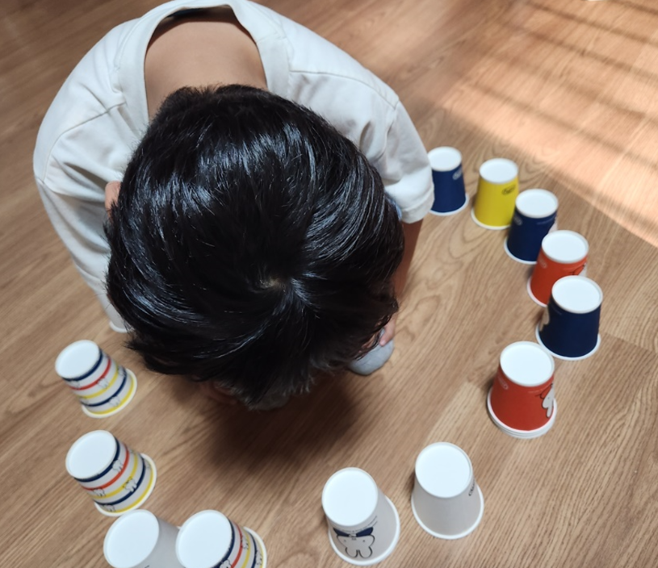

적대적 반항장애 의의
아동기 행동장애 중 하나인 적대적반항장애(Oppositional Defiant Disorder, ODD) 는 지속적이고 만성적인 부정적 태도와 권위적인 인물에 대한 반항적인 행동이 특징이다. 이 장애를 가진 아동은 부모나 교사와 같은 권위적 인물에게 적대적이며, 명령이나 지시에 순종하지 않고 쉽게 짜증을 내거나 화를 내는 경향이 있다. 그러나 또래와의 관계에서는 상대적으로 큰 어려움이 없는 경우가 많으며, 사회적 규범을 심각하게 위반하거나 타인의 권리를 심각하게 침해하는 행동은 드물게 나타난다.
이러한 반항적인 태도는 일반적으로 사춘기를 전후한 아동과 청소년에서 나타나며, 발달 과정의 일부로 볼 수 있다. 그러나 그 빈도와 강도가 정상적인 발달 과정을 넘어서는 경우, 적대적 반항장애로 진단될 수 있다. 적대적 반항장애는 학령기 아동의 2%에서 16% 사이에서 보고되며, 대개 8세 경에 시작됩니다. 사춘기 이전에는 남아가 여아보다 더 많이 진단되지만, 사춘기 이후에는 남녀 비율이 비슷해진다.

적대적 반항장애의 원인
적대적 반항장애(Oppositional Defiant Disorder, ODD)의 원인은 명확하게 밝혀지지 않았으나, 기질적 요인, 해로운 환경에의 노출, 신체적 질환의 경험, 지능지체나 학습능력 장애 등이 관련 있을 수 있다. 또한, 좌절감, 불안, 낮은 자존감 등으로 인해 방어적으로 적대적 행동을 보일 수 있다. 몇 가지 주요 요인이 영향을 미칠 수 있다.
- 기질적 요인: 아동의 선천적인 기질, 특히 쉽게 좌절하거나 감정 조절이 어려운 경우 적대적 반항장애로 발전할 가능성이 높다.
- 유전적 요인: 가정 내에 유사한 행동 문제를 가진 가족 구성원이 있을 경우, 유전적 요인과 환경적 영향을 모두 받아 장애가 발생할 가능성이 높니다.
- 환경적 요인: 가정에서의 불안정한 환경, 부모의 일관성 없는 훈육, 부모 간의 잦은 갈등, 그리고 양육자의 권위적이거나 과도하게 통제적인 양육 방식은 ODD의 발병에 기여할 수 있다.
- 발달적 요인: 초기 발달 과정에서의 문제, 예를 들어, 언어 발달 지연이나 감정 표현의 어려움이 적대적 행동을 유발할 수 있다.
- 심리적 요인: 낮은 자존감, 불안, 좌절감이 방어적 태도로 표현되며 적대적 반응으로 이어질 수 있다.
적대적 반항장애의 특징
적대적 반항장애는 특정 행동 패턴으로 구분되며, 다음과 같은 특징을 보인다.
- 지속적인 반항적 행동: 부모나 교사와 같은 권위적 인물에게 지속적으로 반항하며, 명령에 따르지 않고 고의로 규칙을 어기는 행동이 나타난다.
- 잦은 분노와 짜증: 사소한 일에도 쉽게 화를 내고 짜증을 내며, 감정 조절에 어려움을 겪는다.
- 책임 전가: 자신의 잘못된 행동에 대해 타인을 비난하고, 책임을 전가하려는 경향이 있다.
- 부정적 태도: 대부분의 상황에서 부정적이고 비협조적인 태도를 유지하며, 쉽게 좌절하고 인내심이 부족하다.
- 사회적 규범 준수: 또래와의 관계에서는 비교적 큰 문제가 없고, 심각한 규범 위반 행동이나 위험한 행동은 드물게 나타난다.
적대적 반항장애의 대처 방법
적대적 반항장애를 효과적으로 관리하고 대처하기 위해서는 부모, 교사, 그리고 전문가들의 협력이 필요합니다. 다음은 주요 대처 방법이다.
- 일관된 훈육: 부모와 교사는 아동에게 일관된 규칙과 기대를 설정하고, 이를 지속적으로 유지해야 한다. 규칙을 어겼을 때 적절한 결과를 경험하게 하며, 바람직한 행동에 대해서는 긍정적 강화를 제공한다.
- 긍정적 강화: 적대적 행동이 아닌 긍정적인 행동을 보일 때 이를 적극적으로 칭찬하고 보상함으로써 아동이 긍정적 행동을 반복하도록 유도한다.
- 감정 조절 훈련: 아동에게 자신의 감정을 인식하고 적절하게 표현하는 방법을 가르친다. 분노나 좌절감을 느낄 때 이를 해소할 수 있는 건전한 방법을 훈련한다.
- 심리치료: 인지행동치료(CBT)와 같은 심리치료는 아동이 자신의 부정적 사고 패턴을 인식하고 교정하도록 돕는다. 또한, 부모교육 프로그램을 통해 부모가 효과적인 대처 전략을 배우는 것도 중요하다.
- 가정 환경 개선: 가정 내에서 안정적이고 지지적인 환경을 조성하는 것이 중요하다. 부모 간의 갈등이 적고, 아동이 자신을 존중받는다고 느낄 수 있는 환경을 조성해야 한다.
- 학교와의 협력: 학교에서의 행동 문제를 관리하기 위해 교사와 협력하고, 학교 환경에서도 일관된 지도가 이루어지도록 한다.
초1학년 외동아는 아빠와 할머니, 그리고 학교선생님에게 대들고 또래들과 자주 말다툼을 하였다. 유아기 때는 자기 생각을 잘 나타내는 아이로만 여기면서 재롱둥이로 여겼다. 초등학교 입학 후 쉽게 화를 내며 분노 조절에 어려움을 겪게 되었다. 자신이 잘못했을 때조차 다른 사람을 비난하고 책임을 전가하는 경향이 점차 많이 나타냈다. 학교나 다른 공적 장소에서는 조금 약하게 나타냈지만, 집에서는 이러한 문제 행동이 더욱 두드러져 가정에서 문제를 악화시키는 상황이 되었다.
이러한 문제행동이 만성화될 경우, 대인관계에 심각한 문제가 발생하고, 학업 성취도에도 악영향을 미친다. 이로 인해 친구 관계가 어렵고, 학교 성적이 저조한 경우가 많으며, 우울증, 낮은 자존감, 인내심 부족, 잦은 분노 폭발 등의 문제가 동반될 수 있다. 청소년기에 이르러서는 음주 문제나 범법행위로 이어질 위험이 있다.
따라서 적대적 반항장애는 조기에 개입하고 적절히 관리할 경우 긍정적인 결과를 기대할 수 있다. 적대적 반항장애는 단순한 발달 과정의 일부로 간과해서는 안 되며, 지속적이고 체계적인 개입과 지원이 필요하다. 이러한 대처 방법들을 통해 아동이 긍정적인 사회적 관계를 형성하고, 정서적으로 안정된 발달을 할 수 있도록 돕는 것이 중요하다.
2024.02.22 - [상담] - 초등1학년 - 아이의 마음과 행동은 우주인, 반은 인간
초등1학년 - 아이의 마음과 행동은 우주인, 반은 인간
초등학교 1학년 새로운 환경에서 만나는 새로운 친구, 교사, 공부방법 등에서 나타나는 아이들의 신체적, 인지적, 사회・정서적 아이들의 특성은 다음과 같다. 1. 신체적 발달 1) 신체적으로 발가
think-sis.co.kr
2024.03.16 - [상담] - 초등 1학년 - 정서, 사회적 교류 특성 및 지원 전략
초등 1학년 - 정서, 사회적 교류 특성 및 지원 전략
1. 초등 1학년의 정서적 특성 1) 감정 표현이 다양하게 발달한다 초등1학년 시기의 아이들은 행복, 슬픔, 분노, 두려움과 같은 기본적인 감정을 넘어서, 자신의 감정을 더 세밀하게 인식하고 표현
think-sis.co.kr